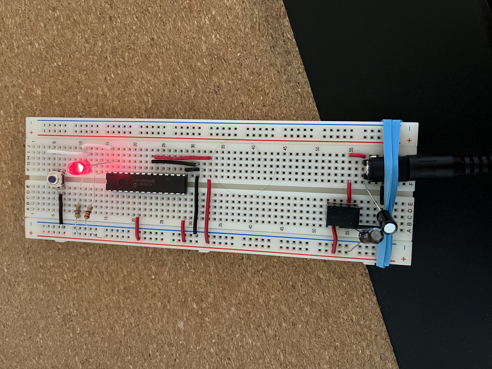
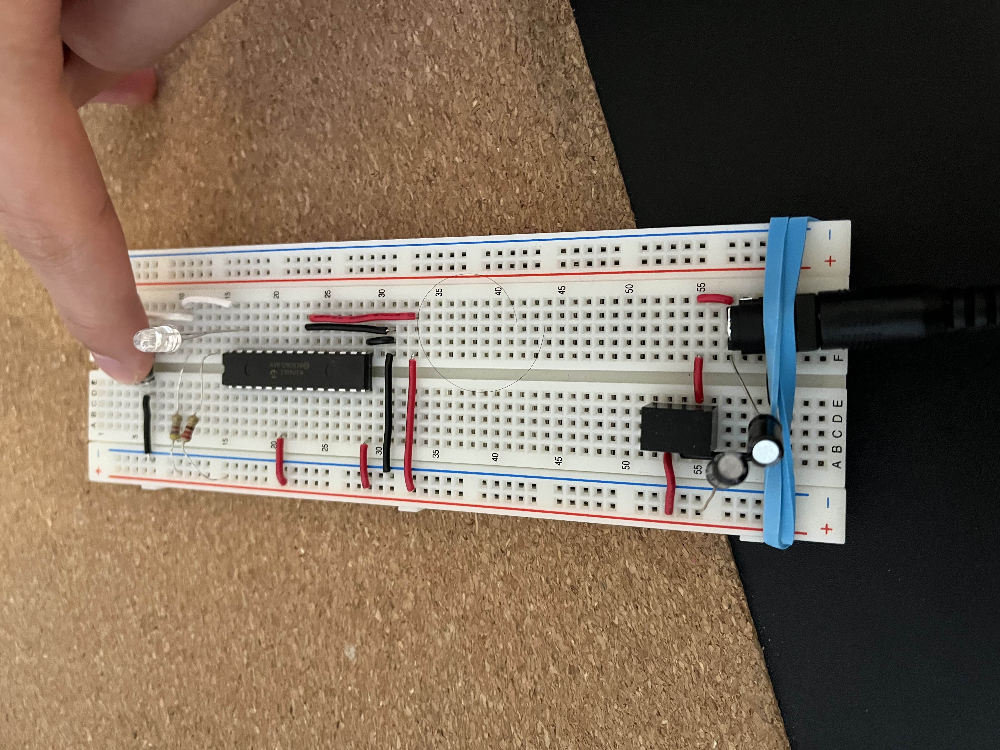

ENCM369

In ENCM369, I learned about the AVR microarchitecture, which is basically the Arduino chip.
On the first lab, we had to use the I/O pins to turn an LED on/off according to switch inputs. One task was to make the LED turn off when the switch was pressed. The second was to make the LED turn on/off after three switch presses.

The caveat was that the lab didn't provide that much information on how to make this work. This forced me to read the data sheet for the AVR128DB28 and figure out how the I/O pins work. I also had to write the code that set the correct I/O pins to the correct values.
Some of the problems I encountered was figuring out how to modify one specific bit of a register. I had to use bitwise OR and AND to fix this. Additionally, I had to make sure holding down the switch didn't count as two presses. This problem is called debouncing. To fix it, I considered using interrupts but I decided to just detect switch releases instead of presses.
Despite the challenges, I got it to work. But more importantly, I learned how to read a data sheet got a handle on the fundamentals of embedded design.